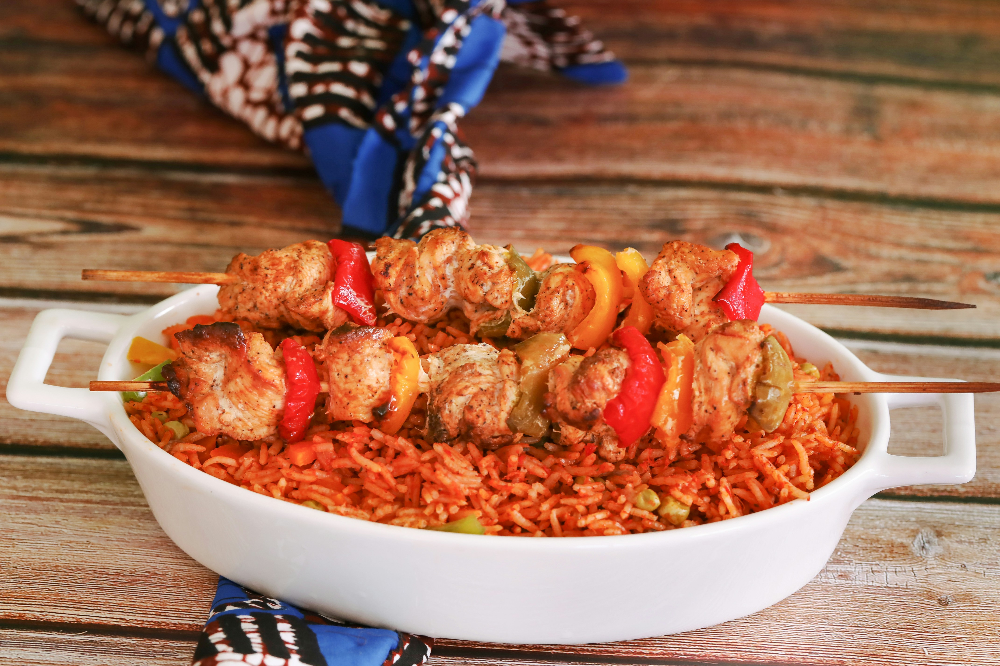

Smoky Party Jollof Rice

Ingredients
- 4 cups long-grained rice
- 8 whole tomatoes
- 4 tablesspoons tomato paste
- 3 bell peppers
- 5 scotch bonnet peppers
- 3 whole onions
- 1/2 cup vegetable oil
- 4 carrots
- 1/4 whole ginger
- 1 whole head of garlic
- 2 cups chicken stock
- Liquid smoke
- 4 teaspoons softened butter
Spices
- 4 tablespoons smoked paprika powder
- 4 whole maggi cubes
- 3 teaspoon dried thyme
- 4 tablespoons curry powder
- 7 dried bay leaves
- 4 tablespoons onion powder
- 3 teaspoons garlic powder
- 4 teaspoons cayenne powder
Steps
- Preheat oven to 150 degrees Celsius or 302 degrees Farenheit
-
Wash the vegetables thoroughly and chop the onions, tomatoes, bell
peppers, scotch bonnet peppers, carrots and ginger into medium-sized
pieces.
- Reserve some of the onions and tomatoes.
- Cut garlic in half and place on oven tray with chopped ingredients.
- Mix together all spices.
- Drizzle some oil onto ingredients on oven tray with a small amount of the spices.
- Place in oven for 15-20 minutes, until all vegetable are nicely grilled.
- Blend ingredients in a belender until blended to your preference.
- Boil blended mix to evaporate some of the water.
- Heat the oil and sauté onions with a bay leaf until fragrant.
- Add blended mix to the sautéed onions and add the spice mix with liquid smoke. Stir well.
- Add the rice and stock. Stir ONCE in a steady stream. Cover the pot with aluminum foil and then with the lid.
- Lower heat to medium-low and simmer.
- Add basil, thinly sliced onion, and tomatoes. Stir and cover with the lid to cook some more.
- Taate chexk the rice to ensure it's cooked to your liking.
- Add butter and fluff into the rice with a fork.
- Remove from heat and serve.
- Enjoy!